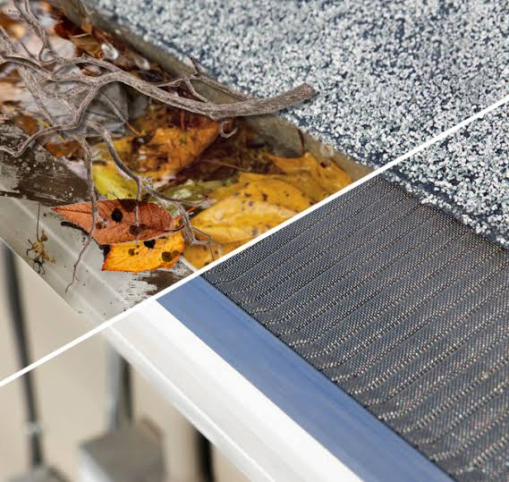
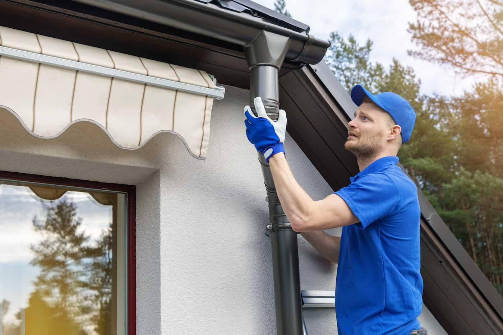
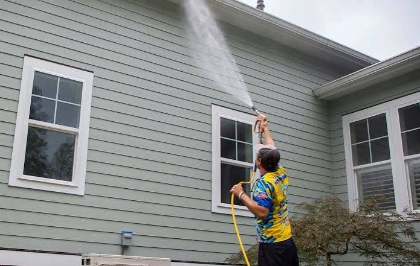
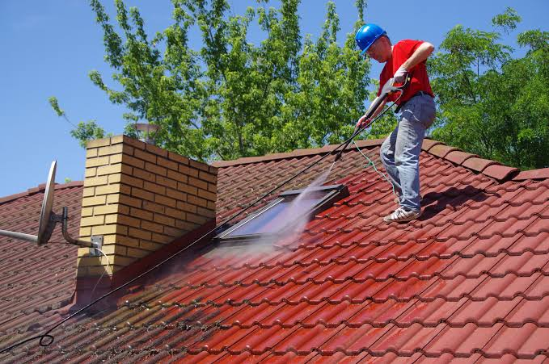

Gutter Cleaning Bolton
Gutters are important pathways that direct water into an allocated area, meaning improperly maintained gutter systems will lead to clogged passages and subsequent damage. The damage that happens when your gutters are not properly maintained can be absolutely disastrous to the function and safety of your home. Water damage can wreak havoc on the foundation and structure of your building. If you are unsure if you are in need of gutter cleaning, it is always safer to have the cleaning completed than not. We will continue to work hard for our customers and deliver high-quality services for affordable rates throughout our community.

Professional Gutter Cleaning in Bolton
Understanding our clients and their diverse needs is the first step to completing a proficient service for our community members. We have proudly served Wilmington for years with high-quality gutter cleaning services. Gutters are essential to the function and efficiency of your commercial or residential space. If you are looking to work with highly credited, respected, and reputable gutter cleaning service providers in Wilmington look no further. Our outstanding feedback from regular and new clientele has propelled our gutter cleaning services to the top of the pack.
Get a Free QuoteOur Services
The services that we provide for our community are comprehensive and offer high value. We look at the service of gutter cleaning as a complete scenario and go above and beyond to deliver nothing but the best to clients. If you are considering utilizing our gutter cleaning services for your residential or commercial property you will not be disappointed! Our team is highly skilled in each service that we provide including gutter cleaning, gutter guard installation, gutter repairs, gutter installations, soft wash for siding and roof cleaning. With any of these packages, you will receive comprehensive and complete services.

Gutter Cleaning
Cleaning your gutters is important to the overall health of your structure and the surrounding property. The main function of your gutter system is to direct water away from your home and into properly allocated places. If you are not diligent when up keeping the maintenance of your gutter system you can be left with water damage in your structure, pest infestations in the gutters, destruction of the surrounding property and more. Gutter cleaning is essential to homeowners who are looking to mitigate any financial loss and upkeep their current value associated with their home.
Gutter Cleaning
Gutter Guards
Gutter guards are great additions to commercial and residential roofs as they benefit owners in a variety of different aspects. Gutter guards can be installed for one of many reasons, but the protection that they provide against corrosion, water damage, and the reduction of necessary maintenance, make the addition a no-brainer for many. If you are looking for a way to increase the productivity of your drainage system while adding safety to your structure, look no further!
Gutter Guards“I had no idea that gutters were so important to the house. My clogged gutters caused ridiculous amounts of damage in my basement, and since then I have them cleaned religiously. The team is always great, friendly and does a thorough job.” - Gregory M.

Install / Repair Gutters
Gutter systems are essential to the health of your home and the surrounding property. When you are looking for a company to take care of the installation and repairs associated with such an integral system, you should turn to the professionals at Cleanest Gutters in Wilmington. Our years of successes and our satisfied customers can attest to the professionalism and expertise incorporated in our services. We are able to assess your current state of gutters, offer a solution that fits your budget and your drainage needs and rectifies the problem at hand in one large swoop.
Gutter RepairSoft Wash Siding
If you have ever been told that high-pressure wash might not be the best choice for your siding, we are here to agree. High-pressure systems can leave your home prone to unnecessary damage and loss. We utilize a soft wash to clean your vinyl siding and roofing from any built-up debris, leaving you with clean, well-maintained siding. Cleaning your roof with a system that is not appropriate can leave you with missing shingles, large bills, and unnecessary repairs. Contact our team to fully understand your options today!
“My property needed a full service, not only did my gutters need cleaning but my roof and siding were dirty too. I got offered a very good price for the entire experience and they did a spectacular job!” - Kim S.


Roof Cleaning
Roof cleaning is a portion of the maintenance that is necessary for homeowners to prolong the life of the roof of their property. The elements that your shingles, clay, metal or other material roofing installation are subjected to can leave the system weakened. By cleaning your roof on a regular basis you can rid your roofing from built-up dirt and debris, and well-equipped to handle any future elements.
Gutter Team
Our team of gutter professionals is happy to assess the current state of your gutter system and offer an on-site evaluation and quote. When assessing your system, we look for key elements that are significant in showing the health of your drainage. We hire people who are hungry for opportunities and show qualities associated with success. Our team is continually trained and taught to ensure that you are left with the top results possible.
“I needed my gutters replaced and decided to hire the team at Cleanest Gutters in Wilmington. They showed me a better option than what I was originally thinking, and it was cheaper too! Very happy with the finished result and the expertise they showed.” - Laura D.

Manchester Central Hub
As a Manchester based company, we have good experience of dealing with many of the densely laid-out city centre areas such as Market Street in Town as well as others like Ancoats, the Manchester City Centre and the long rows of houses in areas like Fallowfield. Our specialised knowledge of these local areas helps us plan the safety measures that we need to tackle the high density brick terraces as well as the commercial multi storey blocks. We come prepared to deal with the soot that may have been deposited from local industrial factories and to clear all greasy residues that may have settled into the gutters. We also clear and clean any roof moss and stubborn sludge that may be causing blockages and restricted water flow.
If ladder access is restricted, we have access to specialised ground based vacuum machines to deal with any tricky layouts in the city. These types of set ups use long reach poles and specially angled cleaning heads to help clear debris and blockages from tight and deep building overhangs, tight alley ways and interna light wells. This allows us to effectively clean and extract wet debris from deep set joints and tight corners.
On a recent job in Market Street (M1), our team cleared 50 meters of high-level seamless box tracking. The blockage was caused by deep clay moss and urban soot that had combined to obstruct the primary gutter outlet. We cleaned the blockage with a wet extraction system that used a high-power dual motor and 50mm smoothing hoses.
The aluminum system was made up of 4 inch deep flow commercial tracks with internal box valleys that were lined with lead. The heavy rain in Manchester can leave them overflowing if silt and soot end up hardening in the corners of the tracks. Because the building was so close to the Piccadilly tree line corridor, we had to clean leaves that had accumulated over time. We did this by deep cleansing flushes, resulting in the horizontal downpipe connections being completely cleared. The client was happy to have their drainage restored to normal
Call Us Today
When you consider who to call for your gutter care, roof cleaning or siding wash there is no one else in the Manchester area! We are known for our outstanding services, always delivered for unbeatable prices. You can contact us today through our customer care line provided below, through email or even on one of our social media platforms! We find solutions for customers dealing with drainage woes, contact us today to see what we can do for your gutter needs.
Request Your Free Bolton Quote
Fill in the form below and we'll get back to you with a free, no-obligation quote for your Bolton property.
Thank you! Your quote request has been received. We'll be in touch shortly.